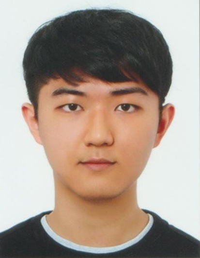

Unity Client Programmer
이예빈
puding2564@gmail.com
010-9473-7840
SKILLS
- Language
- C# · Python
- Engine
- Unity 6 (6000.3)
- 협업
- UVCS(Plastic SCM) · Git
- AI 도구
- Claude Code · Codex · Unity MCP · 이미지 생성 파이프라인 구축
PROJECTS
기억결 / MemoryStone
팀 리더 · 개발 전담 (3인)
2026.05 ~ 진행 중
육각 타일 턴제 덱빌딩 로그라이크. 게임 로직 전체와 Unity 클라이언트를 구현.
제1회 서울 플레이업 AI 게임 챌린지 353팀 중 상위 8팀 선정, 2026 GES 전시·발표 예정.
- 몬스터 AI 계획·예고 — 몬스터별
TurnPlan 하나를 세워 화면 예고와 다음 턴 실행이
같은 계획에서 나오게 하고, 앞 몬스터의 목적지를 예약해 한 칸에 몰리는 문제를 차단.
공격은 형상·피해·가중치 CSV로 정형화해 새 몬스터 추가가 행 추가로 끝나는 구조
- 시드 재현·세이브 — 런 시드 하나를 배치·셔플·공격 패턴·보상 등 용도별 스트림 10개로 파생.
세이브는 난수 내부 상태 대신 소비 커서만 저장하고 복원 시
FastForward해
저장 전후의 난수와 예고된 공격이 동일하게 유지
- 암시야(Fog of War) — 칸별 시야를
Unknown → Hinted → Revealed 3단계로 관리.
원본 맵 대신 단계에 맞게 걸러낸 사본만 UI·미니맵·렌더에 넘겨 모르는 칸의 정보가
화면에 새지 않도록 자료구조 차원에서 정보 은닉을 처리
- 맵 배치 랜덤화 — 자체 맵 에디터의 슬롯 문법으로 사람이 「어디에 무엇이 올 수 있는가」를 정하고,
CSV 프로파일과 시드가 몬스터·함정·상점·상자를 채우는 구조. 안전 반경·위협 예산·정예 하한을 검사하는
검증 게이트를 두어 실패 시 재롤, 상한 초과 시 저작 원본으로 진행
턴 이동 프레임 56 → 18 ms · 시야 갱신 59 → 5.8 ms/turn ·
씬 로드 17.5 → 0.56초
Rainbow War
개발 리더 (7인)
2021.04 ~ 2022.04
실시간 멀티플레이 영역 점령 TPS. 아주대 교내 동아리 시연회 출품.
- 영역 확장·침탈 알고리즘 — 궤적이 둘레를 가르는 두 갈래 중 넓은 조각을 채택해
폴리곤 합집합 연산 없이 확장을 처리하고, 잘린 영역은 복수 폴리곤으로 분할.
결과 폴리곤은 Ear Clipping 삼각분할로 런타임 메시화
- Photon PUN2 멀티플레이 동기화 — 매칭·팀 배정·씬 전환과 인게임 상태 동기화 담당.
점수·판정은 마스터 권위로 모으고 서버 시계를 기준 삼아 클라이언트 간 판정 불일치 제거.
무거운 폴리곤 절단은 소유 클라이언트에서만 계산하고 확정된 정점 배열만 전송
설화
개발 전담 (4인)
2022.04 ~ 2022.12
조선 배경 횡스크롤 턴제 로그라이크. 소학회 내 시연.
- 전투 이벤트 전파에 Observer, 생성에 Factory 패턴을 적용하고
캐릭터·스토리·이벤트를 JSON 데이터로 분리해 8개월간 늘어나는 콘텐츠 요구사항에 대응
Match & Mist
개발 참여
Global Game Jam 2022 · 3일
제한 시야 추격 프로토타입. 이동 속도가 소음이 되고 좀비가 그 소음을 추적하는 규칙을 설계·구현,
3일 안에 플레이 가능한 빌드를 제출.
Unity Client Programmer
이예빈
puding2564@gmail.com
010-9473-7840
EXPERIENCE
(주)베스텔라랩
인턴 · 영상 분석 AI 부서
2025.09 ~ 2025.12
주차장 CCTV 기반 차량 위치 안내 서비스의 번호판 인식(LPR) 모듈 담당.
- 회전·왜곡·원근 변환 증강으로 실제 CCTV 각도에 대응하며 인식 모델 파인튜닝 —
AI-Hub 데이터셋 기준 정확도 약 97~97.9%
- ONNX 변환 + FP16 양자화로 추론 시간 2.59s → 1.18s
EDUCATION
- 2020.03 ~ 2026.02
- 아주대학교 소프트웨어학과 (학사)
- 학점
- 4.06 / 4.5 · 전공 3.98 / 4.5
CERTIFICATION
- 2025.09
- 정보처리기사 (한국산업인력공단)
- 2025.06
- ADsP 데이터분석준전문가 (한국데이터산업진흥원)
ACTIVITIES
- 2026
- 제1회 서울 플레이업 AI 게임 챌린지 — 기억결로 353팀 중 상위 8팀 선정, 2026 GES 전시·발표 예정
- 2022
- Global Game Jam 2022 — Match & Mist 개발 참여
- 2022
- 소학회 TML — 설화 개발 전담
- 2021
- 소학회 브레인스톰 — Rainbow War 개발 리더